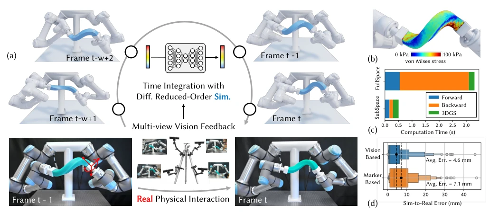
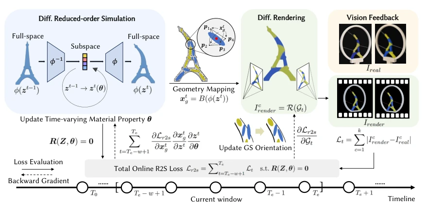
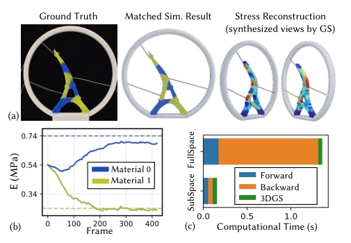
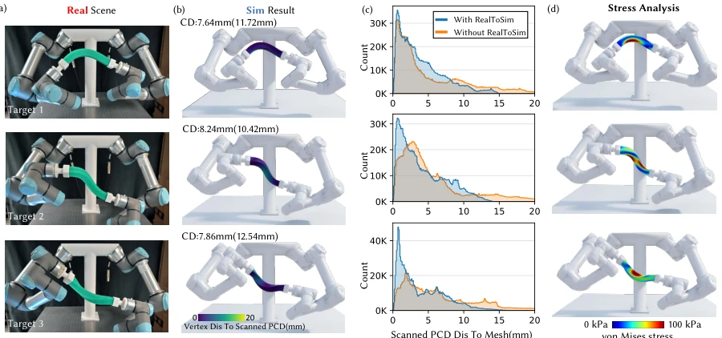
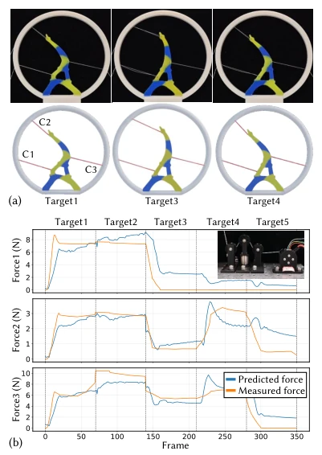
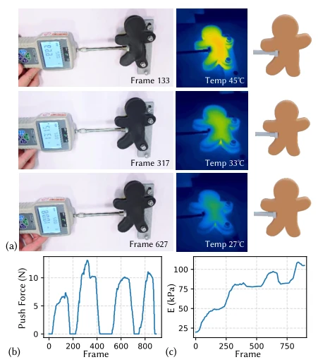
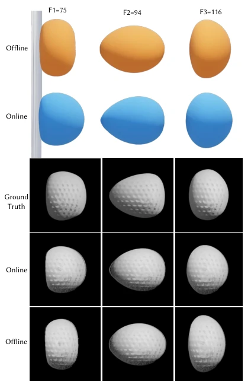
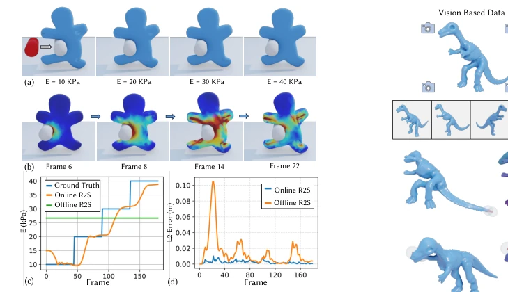
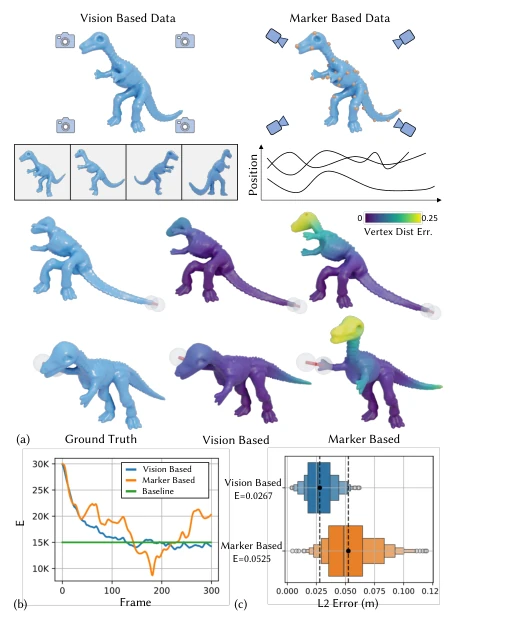
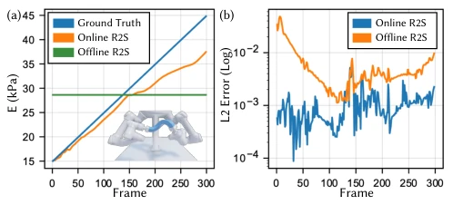

This paper attempts to bridge the "Sim-to-Real" gap using "online" methods, which sounds promising, after all, offline tuning has long been proven prone to drift. The authors developed a RealSimLoop, using differentiable reduced-order simulation combined with 3DGS, claiming quasi-real-time capability. The highlight is indeed speed, over 6 times faster than full-space, and capable of online tracking material changes. But the drawbacks are obvious: in high-dynamic scenes (e.g., high-speed ball), the reduced-order model collapses directly, requiring fallback to full-space, making this "online" robustness somewhat puzzling. Additionally, although 3DGS renders fast, physical consistency relies entirely on the subsequent simulation, essentially it is still physics-driven. Overall, it is a decent engineering optimization, but do not expect it to solve all physics modeling challenges, especially those untrained deformation modes.
研究动机Motivation
现实世界观察往往稀疏，而下游任务需要内部应力等隐藏物理量。现有离线方法（如 Hahn et al. 2019; Cai et al. 2024）只能拟合固定参数，无法应对时变属性或累积误差，导致开环漂移。纯视觉方法（Wang et al. 2025; Wu et al. 2024）虽能重建几何，但缺乏物理一致性，无法推断应力或力。全空间仿真虽准但太慢，无法在线适应。因此，需要一种既快又能在线修正物理参数的框架，以消除现实鸿沟并支持实时应用。
Real-world observations are often sparse, while downstream tasks require hidden physical quantities such as internal stress. Existing offline methods (e.g., Hahn et al. 2019; Cai et al. 2024) can only fit fixed parameters, unable to handle time-varying attributes or cumulative errors, leading to open-loop drift. Pure vision methods (Wang et al. 2025; Wu et al. 2024) can reconstruct geometry but lack physical consistency, unable to infer stress or force. Full-space simulation is accurate but too slow, unable to adapt online. Therefore, a framework that is both fast and capable of online correction of physical parameters is needed to eliminate the reality gap and support real-time applications.
The overall Pipeline is: Visual feedback -> 3DGS geometry mapping -> Differentiable reduced-order simulation -> Rendering -> Loss calculation -> Backpropagation. There are three core innovations: 1. Sliding window optimization: Does not rely on the full sequence, only minimizes visual and rendering differences in the current window {t-w+1, ..., t}, preventing error accumulation. 2. Neural reduced-order simulation: Uses a neural network to map low-dimensional latent space to full space, accelerating forward simulation and gradient backpropagation, achieving quasi-real-time. 3. Adjoint Method: Efficiently calculates gradients of material parameters θ, via physical residual constraint backpropagation, achieving a closed loop from pixels to physical parameters. 3DGS is used to map simulation geometry to differentiable rendering primitives, ensuring geometry and physical state synchronization.
实验Experiments
在真实变形物体（软条、埃菲尔塔、恐龙）上测试。基线对比离线 R2S 和 Marker 系统。指标包括 L2 误差、PSNR、计算时间。结果：在线方法平均误差 4.6mm 优于离线 7.1mm，速度提升 6.23x。消融显示 subspace 维度 r 和窗口 w 影响精度与速度平衡。Vision 反馈优于 Marker（误差减半）。高温追踪和力预测验证了物理一致性。但在高速球案例中降阶模型失效，需回退全空间。
Tested on real deforming objects (soft bar, Eiffel tower, dinosaur). Baseline comparison with offline R2S and Marker system. Metrics include L2 error, PSNR, computation time. Results: Online method average error 4.6mm outperforms offline 7.1mm, speed up 6.23x. Ablation shows subspace dimension r and window w affect accuracy and speed balance. Vision feedback outperforms Marker (error halved). High temperature tracking and force prediction verify physical consistency. But in the high-speed ball case, the reduced-order model fails, requiring fallback to full space.
其他图片Other Figures

Fig. 1. We propose an online Real-to-Sim method to reduce the reality gap for deformable object manipulation. (a) In our pipeline, real-to-sim gap is eliminated by minimizing the difference between physical vision feedback and simulation-based rendered images within a sliding time window {𝑡−𝑤+ 1, . . . ,𝑡}. In this way, we close the sim-real loop by integrating scene representation with 3D-GS, (b) and realize downstream applications like physical stress construction in arbitrary new synthesized views. (c) Neural reduced-order differentiable simulation is adopted, which significantly accelerates computation and achieves quasi-real-time performance, delivering 6.23x speedup over full-space methods. (d) Our method generalizes to physical inputs from conventional marker-based motion capture sy

Fig. 2. Pipeline for online real-to-sim adaptation with vision-based feedback (i.e., sparse-view images 𝐼real obtained from cameras). The forward process simulates deformation using a reduced-order model, maps the geometry to 3D Gaussians, and renders the image 𝐼render through differentiable rendering to evaluate Ls2r by updating time-varying material properties. The backward process back-propagates loss gradients to update material properties 𝜽and Gaussian orientations within a sliding window (i.e., from 𝑇𝑒-w+1 to 𝑇𝑒), supporting gradient-based optimization to efficiently eliminate the real-sim difference.

Fig. 3. Online real-to-sim results for a multi-material cable-driven de- formable structure. (a) With vision feedback, the simulation results match the ground truth, enabling downstream applications such as stress recon- struction. (b) Convergence curves for the Young’s modulus of two silicone rubber materials. (c) Comparison with computation time showcases that our subspace solution achieves a 7.56× speedup, ensuring online efficiency.

Fig. 4. Result for soft bar manipulation by dual robot arms. (a) After performing online real-to-sim adaptation, the control strategy optimized in simulation is directly applied to the real robotic system without additional tuning. (b) Corresponding simulation results after adaptation, colored by the vertex-to-scan distance. (c) Quantitative comparison between the simulated mesh and the ground-truth point cloud captured by a 3D scanner, demonstrating reduced geometric discrepancy after real-to-sim adaptation. (d) The adapted simulation with vision-based feedback further enables downstream physical analysis of von Mises stress reconstruction.

Fig. 5. (a) Additional real-to-sim adaptation result for cable-driven inter- action with the multi-material Eiffel Tower model. (b) With the help of simulation, we can predict the cable force based on stress field reconstruc- tion, which matches the ground-truth data captured by the force sensor, as shown in the zoom-in view.

Fig. 6. Online real-to-sim adaptation for stiffness tracking in a temperature- varying structure. (a) Representative frames showing simulated deformation during cooling. (b) Push force over time. (c) Estimated Young’s modulus over time, demonstrating tracking of temperature-dependent stiffness variation.

Fig. 7. Result of a high-speed ball bouncing back after hitting a wall with 𝜐0 = 27m/s. The vision data are duplicated from IPC [Li et al. 2020], and the texture of the result is obtained by GS-based training.

Fig. 8. (a) Comparison of deformation dynamics across different stiffness levels (Young’s modulus changing dynamically from 10 kPa to 40 kPa in steps when the bar is hit by the Gingerbread-man. (b) Reconstructed stress fields over time (E = 10 kPa for all frames). (c) Prediction of time-varying Young’s modulus changes and (d) comparison of online and offline methods, showing that the proposed online framework tracks evolving stiffness.

Fig. 10. Comparison of online real-to-sim adaptation on the dinosaur ex- ample using vision-based and marker-based physical input. 40 markers uniformly distributed are used for comparison. (a) Key frame showcase vision-based method outperforms in terms of reconstructed geometry ac- curacy. (b) Material parameter update curves during online adaptation. (c) Distribution of L2 errors over all frames for the two methods.

Fig. 9. Result and analysis of material aging in the bar manipulation task. (a) Our online real-to-sim method accurately tracks the time-varying Young’s modulus of the bar, whereas the offline baseline estimates an almost con- stant stiffness. (b) The per-frame L2 error further shows that online real-to- sim consistently outperforms the offline method.